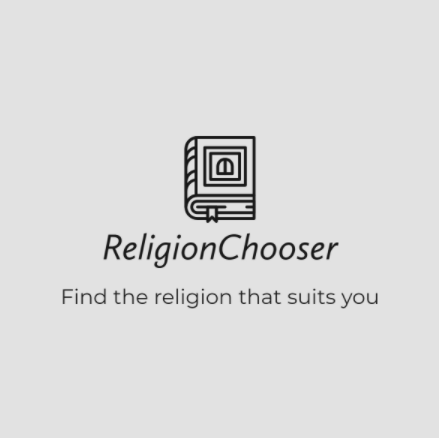
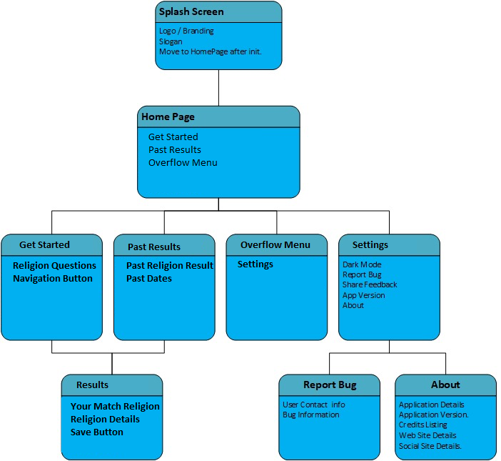
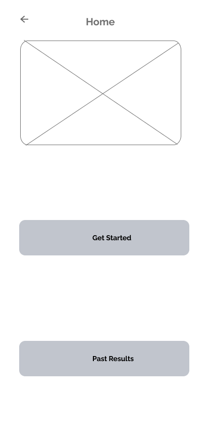
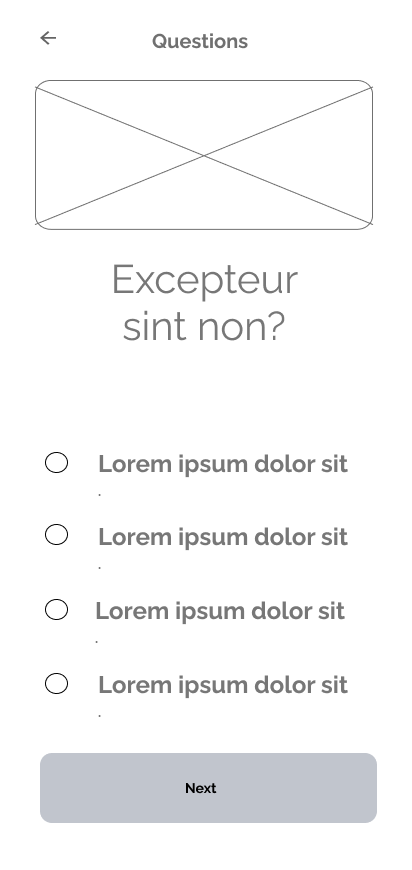
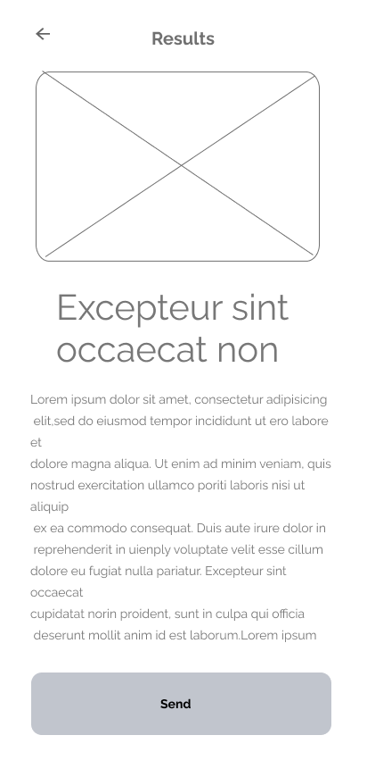
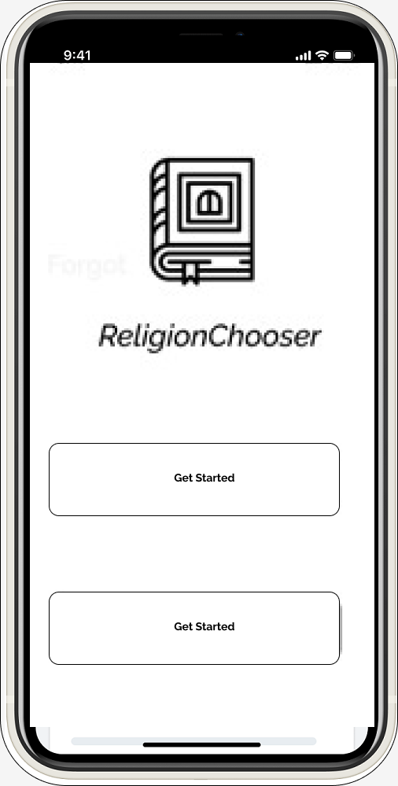
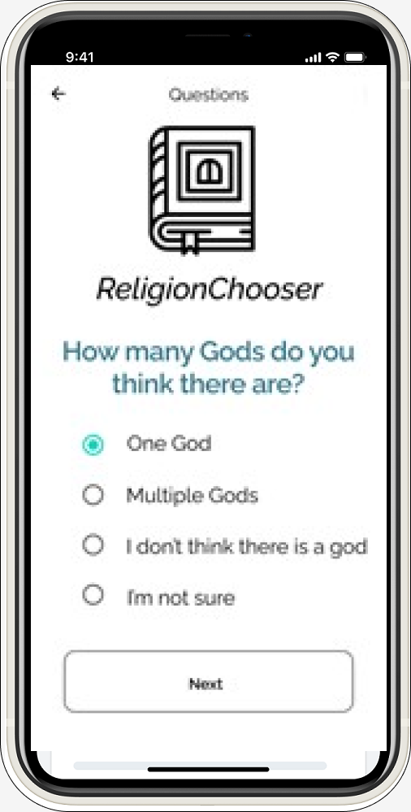
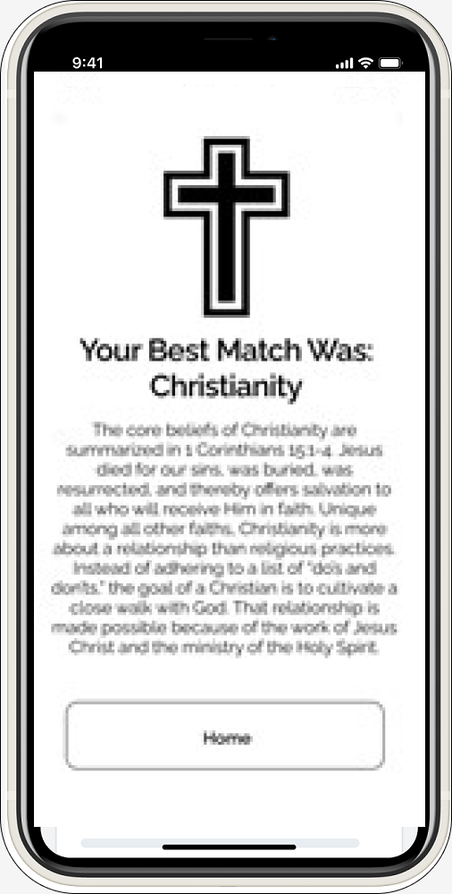

Religion Chooser App
Find your religion today!

There are so many religions in the world, and for someone looking to find
one that suits their views, that search can be very difficult. That is
where the Religion Chooser app comes in. This application will ask the
user a variety of questions about their values and beliefs and tell them
which religion matches closest to their views. It’s a great app to get to
know yourself, and to possibly find a religion to call your own. This app
will also save your results so if you want to try again, or a friend or
family member wants to try, they can see their results also.
Collaboration: Me, Myself, and I
Language: Kotlin/Swift
Operating System: Android/iOS
Technologies and Frameworks used:
- MVC Pattern
- ViewBinding
- Persistence
- RecyclerView/TableView
- Custom Adapter
- GIT
- Navigation
My Colour Scheme
Font-Family: Calibri
How it started




This application gets straight to the purpose. The app is very easy to
navigate and allows users to always know what screen their on. When I was
creating the UX for the Religion Chooser app, I wanted the flow of the app
to be clear and concise.
How it's going



This app was a school project that focused specifically on the
functionality. The design is basic intentionally. This app was made to
get you to your questions and results, and the Religion Chooser does that
to perfection!